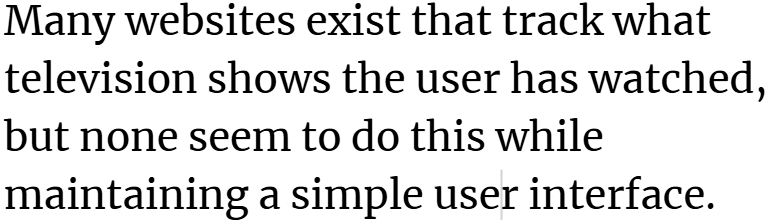
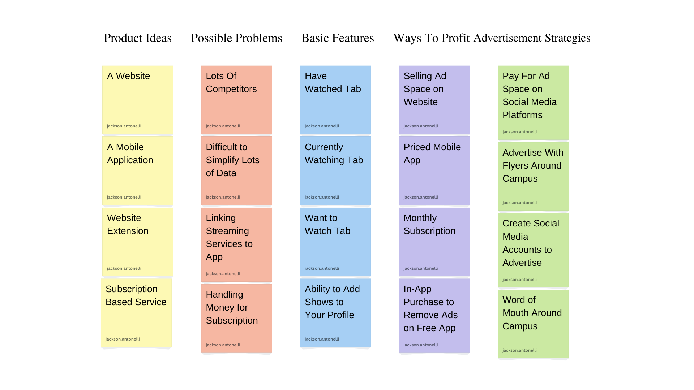
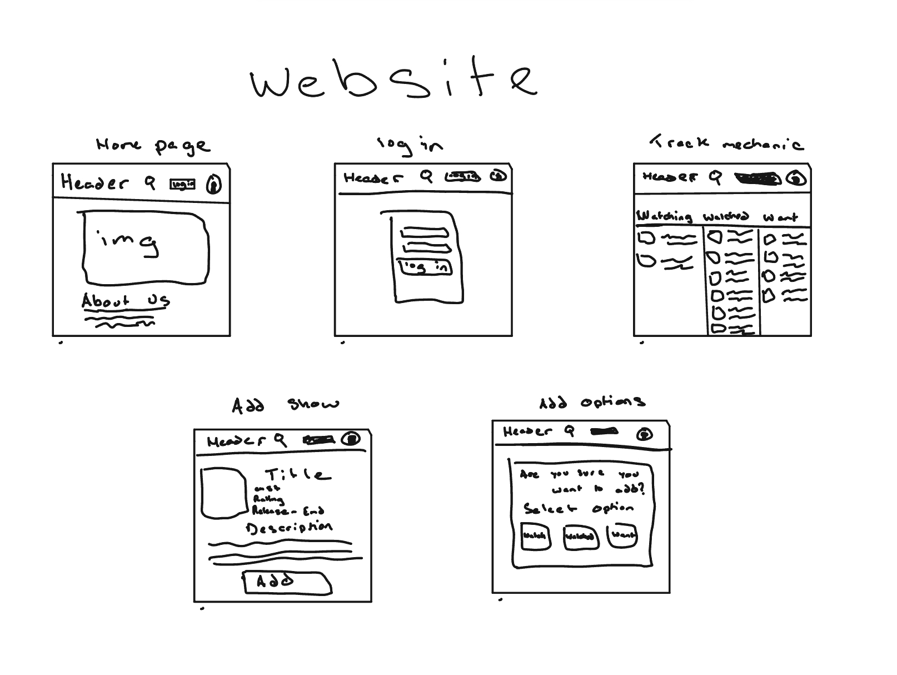
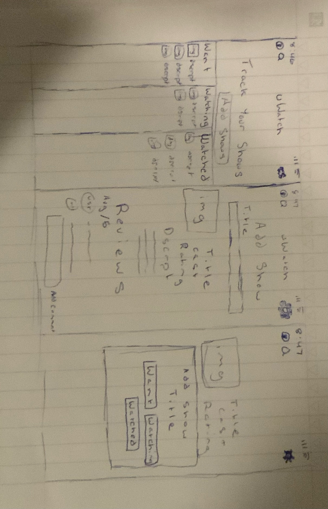

Hi! My name is Jackson Antonelli, and I am a freshman computer science major at the University of South Carolina. Since a young age, I’ve had a passion for computer science, and I am especially interested in cyber security. My personal mission is to lead my own network security company.
Many websites exist that track what television shows the user has watched, but none seem to do this while maintaining a simple user interface.

Affinty diagram with 5 categories and 20 ideas about a televison watch history tracker

These sketches show three possible solutions to our problem. In order, we see a website, a mobile app, and a website extension.

This simple prototype shows a user opening the app, logining into an account, and viewing and adding shows.